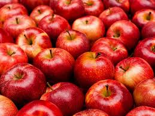

Top Rated Fruits Shop In Makassar

Contact Us
Thanks for comment
You Will Need This
Fruits For Healthy
Fruits are an excellent source of essential vitamins and minerals, and they are high in fiber. Fruits also provide a wide range of health-boosting antioxidants, including flavonoids.
Eating a diet high in fruits and vegetables can reduce a persons risk of developing heart disease, cancer, inflammation, and diabetes. Citrus fruits and berries may be especially powerful for preventing disease.
Our Top Fruits
Fruits
Lemon
Strawberry

Aple
Banana